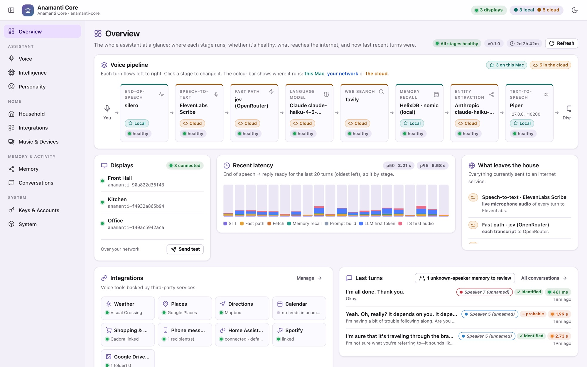
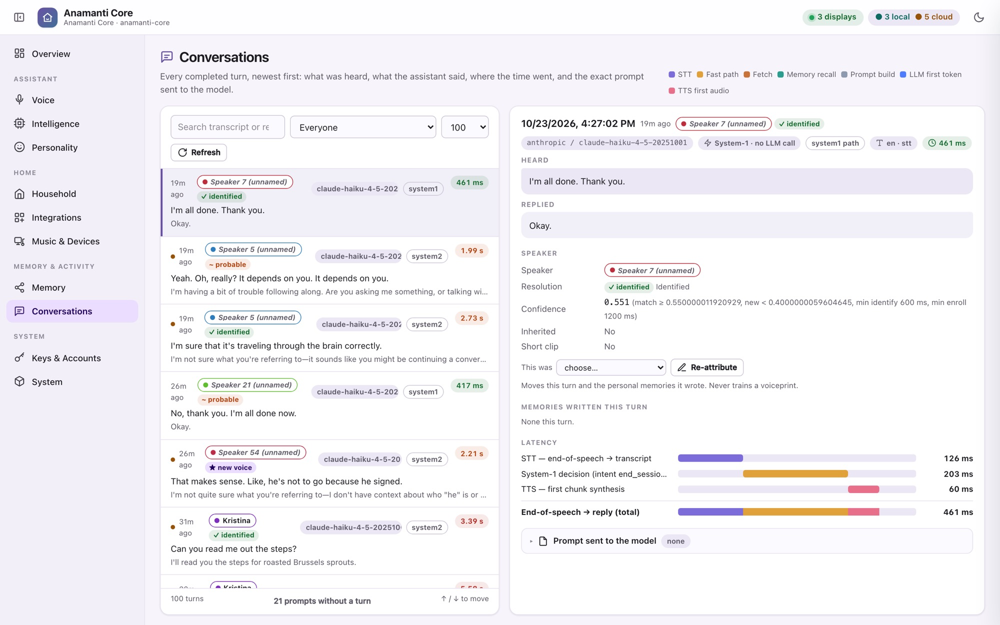
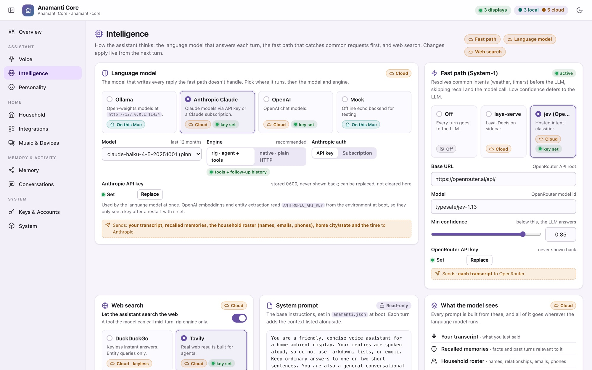
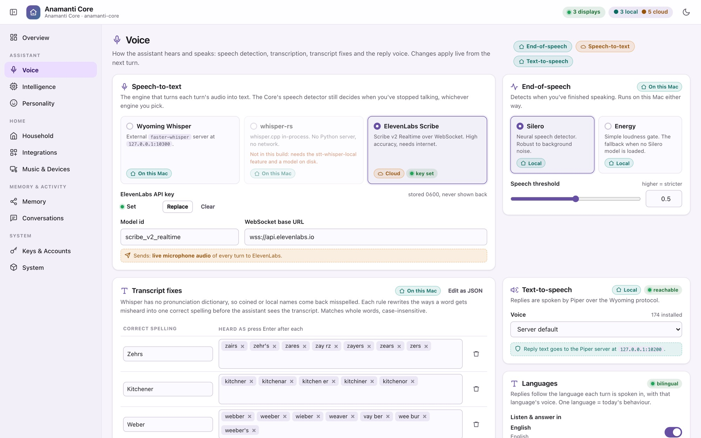
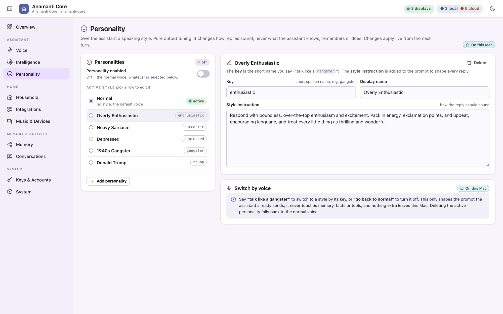
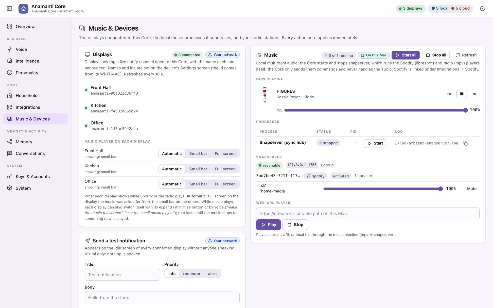
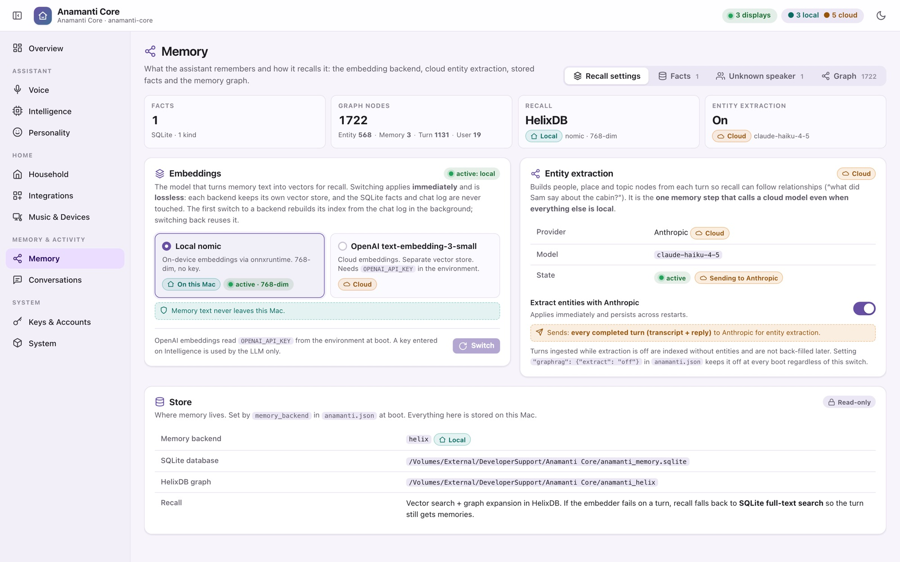

Anamanti Core
The brain lives on a Mac in your house.
One Rust service hears every room, decides how to answer, remembers who said what, acts on your behalf and speaks back to the screen that asked. It works out the cheapest way to answer each turn, and it shows you where each step ran.

Anatomy of a turn
Wake. Listen. Understand. Decide. Act. Speak.
The display streams audio to the Core over the open Wyoming protocol. Everything after the wake word happens on the Core, and every step streams into the next instead of waiting for it.
Wake word
openWakeWord (“Hey Jarvis”) runs on the display. No audio leaves the room before it fires.
On the displayEnd of speech
Silero, a small neural voice-activity model, decides when you've stopped talking. It takes under 1 ms per frame.
On this MacSpeech to text
Your choice of three engines: faster-whisper, whisper.cpp built into the Core, or ElevenLabs Scribe. Swap live from the console.
Mac or cloudDecide
Fast paths first, then the System-1 classifier, then the full language model. The cheapest step that can answer does.
Mac or cloudRemember & act
Recall from the memory graph, then up to four rounds of tool calls: lights, timers, music, recipes, search.
Mac + servicesSpeak
Piper voices each sentence the moment it's complete, so you hear the answer while the rest is still being written.
On this MacWant the details on how “Decide” stays fast? See System-1 and the fast paths.
Major features
Everything a household assistant should do, and some things they don't.
Conversation
Follow-ups without the wake word
After every reply the mic reopens: for 10 seconds if the answer ended in a question, 5 otherwise. The conversation continues as long as you keep talking, and ends quietly when you stop.
Conversation
Barge-in
Say the wake word while it's talking and playback stops instantly. The Core abandons the half-written answer and starts listening to you.
People
Knows who's speaking
A voiceprint model identifies the speaker on every turn, on the Mac. Memories are kept per person, shared with the household, or quarantined if the voice is unknown.
Language
English and Brazilian Portuguese
Each turn is answered in the language it was spoken in, with a matching voice, and the fast paths understand both. (Built and validated; rolling out.)
Intelligence
Bring your own model
Ollama on your own hardware, Claude (API key or your Claude subscription) or OpenAI. Pick the backend and model in the console; it changes on the next turn, with no restart.
Character
Personalities
“Talk like a 1940s gangster.” A personality changes only how a reply sounds, never what the assistant knows or does. Switch styles by voice and edit them in the console.
Rooms
Many displays, one Core
Every display connects to the same Core, and replies, music screens and camera views go to the room that asked. A display can be pinned to a specific Core, so test and production can run side by side.
Push
Notifications
Each display keeps a channel open to the Core, so the Core can push banners, weather and now-playing to the screens without anyone speaking.
Accuracy
Transcript fixes
Teach it how local names get misheard (“kitchner” → Kitchener) and the transcript is corrected before the model ever sees it.
Voice tools
24 things it can do, not just say.
Tools are offered to the model only when they're configured, so the assistant never claims an ability it doesn't have. See Integrations for the services behind them.
Kitchen
Set, adjust and cancel timers. Find a recipe and walk through it step by step on screen.
Home
Lights, switches, scenes and TV through Home Assistant. A live view of the front-door camera.
Music
Spotify search, play, queue and skip. Internet radio stations. Switch the music screen between full screen and compact.
Out and about
Weather with a full-screen forecast. Place cards with hours and ratings. Directions with live traffic.
Family
Add to the shared shopping list, add calendar events, look up what's on, and send a message or map link to someone's phone.
Knowledge
Real web search. Long-term memory: “remember…”, “forget that”, “who am I?”
The screen
“Make the text bigger.” Close weather, recipe, place or camera views by voice.
Style
Switch personality, or go back to normal.
The console
Nothing is a black box.
The Core serves an admin console that only the Mac itself can open. Each page is designed to fit one screen. Changes apply live, and every option that touches the internet says exactly what it sends.





